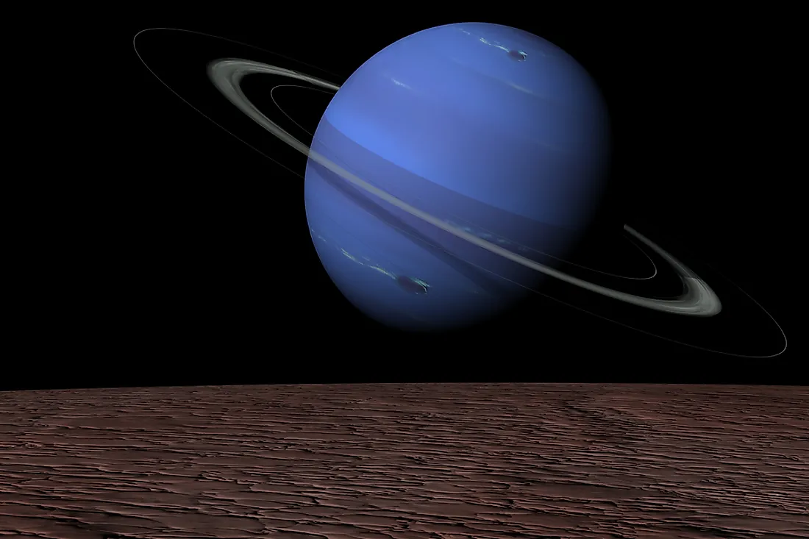
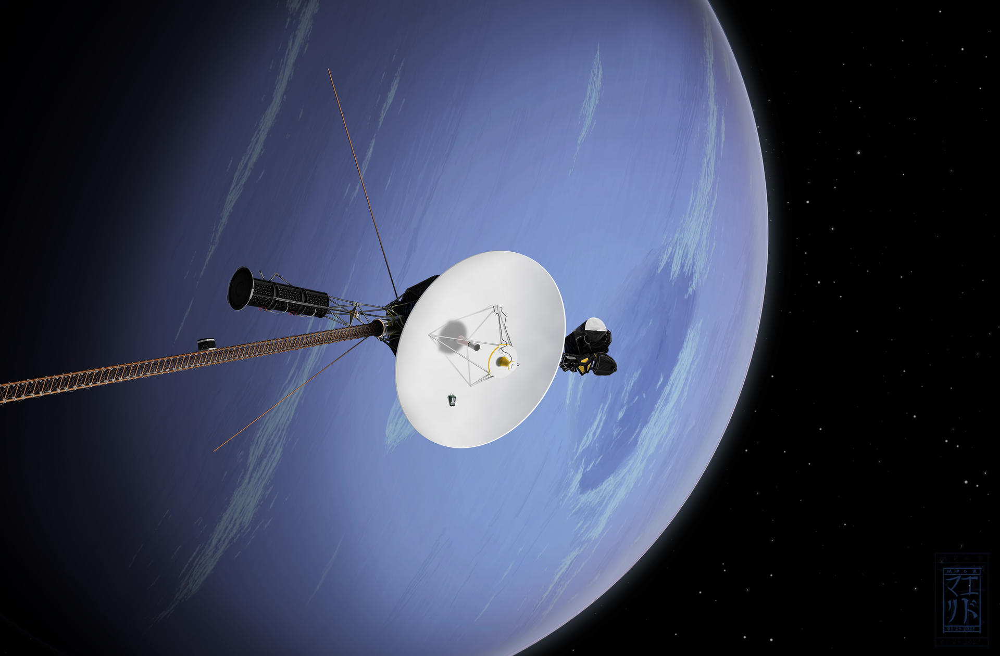

Нептун
Нептун - восьма і найдальша від Сонця планета Сонячної системи. Його маса перевищує масу Землі в 17,2 рази і є третьою серед планет Сонячної системи, а за екваторіальним діаметром Нептун займає четверте місце, перевищуючи Землю в 3,9 раза. Планету названо на честь Нептуна — римського бога морів.

Виявлено 23 вересня 1846 року, ставши першою планетою, відкритою завдяки математичним розрахункам. Виявлення непередбачуваних змін орбіти Урана породило гіпотезу про невідому планету, гравітаційним впливом якої вони і обумовлені. Нептун знайшли в межах передбаченої орбіти. Незабаром було відкрито його найбільший супутник Тритон, а 1949 року — Нереїда. Нептун відвідував лише один космічний апарат, «Вояджер-2», який пролетів поблизу планети 24—25 серпня 1989 року. З його допомогою були відкриті кільця Нептуна та 6 його супутників. Інші відомі супутники Нептуна відкриті у XXI столітті.
Нептун за складом близький до Урану, і обидві планети відрізняються від великих планет-гігантів - Юпітера і Сатурна. Іноді Уран та Нептун поміщають в окрему категорію «крижаних гігантів». Атмосфера Нептуна, подібно до атмосфери Юпітера і Сатурна, складається в основному з водню і гелію, поряд зі слідами вуглеводнів і, можливо, азоту, проте містить більш високу частку води, аміаку і метану. Надра Нептуна і Урана складаються переважно з «льодів» і каменю. Сліди метану у зовнішніх шарах атмосфери є причиною синього кольору планети.
Астрономічні харакетристики
В атмосфере Нептуна бушуют самые сильные ветры среди планет Солнечной системы; по некоторым оценкам, их скорости могут достигать 600 м/с. Температура Нептуна в верхних слоях атмосферы близка к −220 °C. В центре Нептуна температура составляет, по различным оценкам, от 5000 K до 7000—7100 °C, что сопоставимо с температурой на поверхности Солнца и сравнимо с внутренней температурой большинства известных планет. У Нептуна есть слабая и фрагментированная система колец, возможно, обнаруженная ещё в 1960-е годы, но достоверно подтверждённая «Вояджером-2» лишь в 1989 году.

Маса Нептуна (1,02409⋅1026 кг) знаходиться між масою Землі та масою великих газових гігантів. Екваторіальний радіус Нептуна дорівнює 24764 км, що майже в 4 рази більше земного. Нептун і Уран часто вважаються підкласом газових гігантів, який називають «крижаними гігантами» через їхній менший розмір та інший склад (меншу концентрацію летючих газів). При пошуку екзопланет Нептун використовується як метонім: виявлені екзопланети зі схожою масою часто називають «нептунами», також часто астрономи використовують як метонім «юпітери».
Середня відстань між Нептуном і Сонцем — 4,55 млрд км (30,1 а.о.), і повний оборот навколо Сонця має 164,79 року. 12 липня 2011 року Нептун завершив свій перший з моменту відкриття планети в 1846 повний оборот. З Землі він був по-іншому, ніж у день відкриття, внаслідок того, що період звернення Землі навколо Сонця (365,25 дня) не є кратним періоду звернення Нептуна. Період обертання Нептуна навколо осі становить близько 16 годин.
Супутники та кільця Нептуну
У Нептуна відомо 16 супутників, причому одному з них належить понад 99,5 % їх сумарної маси, і лише він масивний настільки, щоб стати сфероїдальним. Це Тритон, відкритий Вільямом Ласселом лише через 17 днів після відкриття Нептуна. На відміну від решти великих супутників планет у Сонячній системі, Тритон має ретроградну орбіту. Можливо, його захопили гравітацією Нептуна, а не сформувався на місці, і, можливо, колись був карликовою планетою в поясі Койпера. Він досить близький до Нептуна, щоб постійно перебувати у синхронному обертанні. Через приливне прискорення Тритон повільно рухається по спіралі до Нептуна, і, в кінцевому рахунку, буде зруйнований при досягненні межі Роша, в результаті чого утвориться кільце, яке може бути більш потужним, ніж кільця Сатурна. Згідно з розрахунками фахівців Центру радіофізики та космосу Корнеллського університету, це відбудеться приблизно через 3,6 мільярда або через 1,4 мільярда років, залежно від того, в якому з екстремумів Кассіні знаходиться гамільтонівське обертання Тритона в поточну епоху. У 1989 році було проведено оцінку температури Тритона, яка склала -235 °C.

Нептун має кільцеву систему, хоча набагато менш істотну, ніж, наприклад, Сатурн. Кільця можуть складатися з крижаних частинок, покритих силікатами, або заснованим на вуглеці матеріалом, - найімовірніше, це він надає їм червоного відтінку. У 2022 році за допомогою космічного телескопа Джеймс Вебб були вперше отримані чіткі знімки кілець Нептуна в ближньому інфрачервоному діапазоні (довжини хвиль від 0,6 до 5 мкм). Крім кількох вузьких яскравих кілець на знімках видно більш тьмяні пилові кільця, багато з яких вдалося зняти вперше з часу відвідування околиць Нептуна зондом «Вояджер-2» у 1989 році, оскільки вони погано помітні в діапазоні видимого світла.
Дослідження Нептуну
У 1845-1846 роках Урбен Левер'є та незалежно Джон Куч Адамс провели розрахунки, припускаючи існування нової планети у Сонячній системі. Згодом, завдяки зусиллям Левер'є, Нептуна знайшли 23 вересня 1846 року в Берлінській обсерваторії. Проте виникла суперечка між англійцями та французами за визнання прав на відкриття Нептуна. У результаті прийнято вважати Адамса і Леверье співвідкривачами.
У 1989 році космічний апарат "Вояджер-2" здійснив близький проліт повз Нептун і його супутника Тритона, передаючи на Землю цінні дані. Місія "Вояджер-2" підтвердила існування магнітного поля Нептуна, виявила нових супутників та кільця планети, а також встановила надзвичайно активну погодну систему на цій віддаленій планеті. Також плануються нові космічні місії, які розширять наше розуміння про Нептуна. Наприклад, НАСА розробляє місію під назвою "Neptune Odyssey", яка передбачає відправлення космічного зонда до Нептуна. За планами запуск місії запланований на 2031 рік, а зонд очікується доставитися до планети до 2043 року.